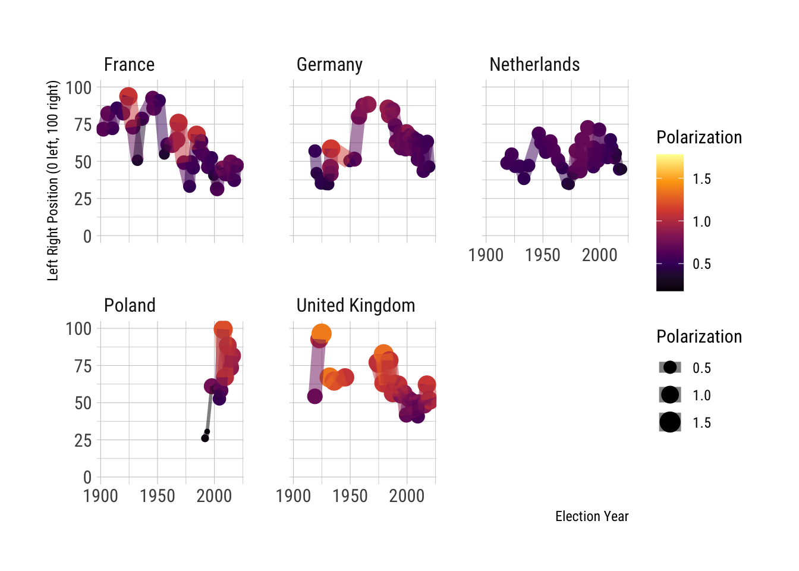
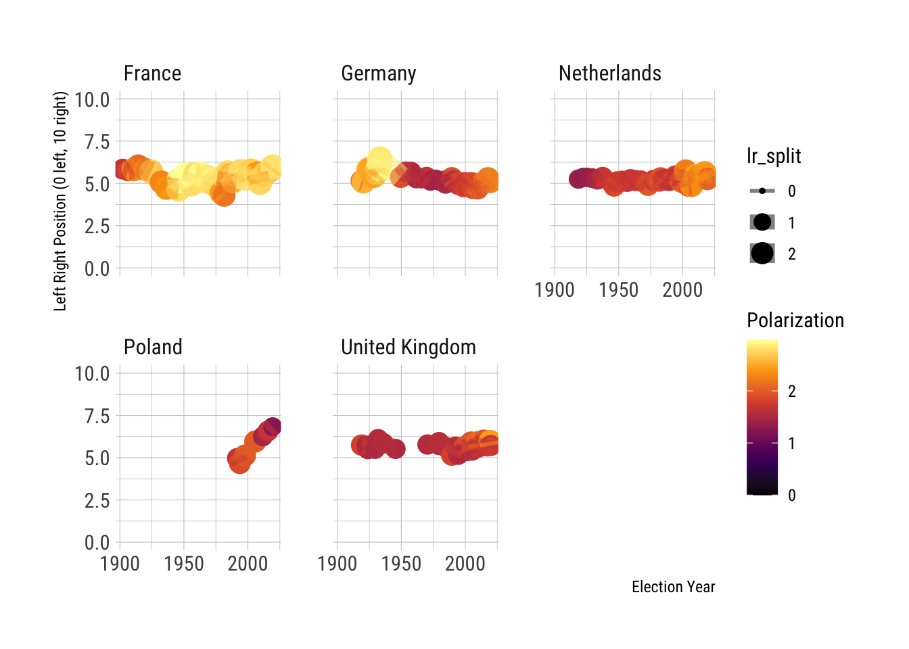

# Read in the database
positions <- tbl(con, "viewcalc_party_position") %>% collect()
tbl(con, "view_election") %>% collect() %>% pull(country_name) %>% unique()## [1] "Australia" "Austria" "Belgium" "Bulgaria" "Canada" "Switzerland" "Cyprus" "Czech Republic" "Germany"
## [10] "Denmark" "Spain" "Estonia" "Finland" "France" "United Kingdom" "Greece" "Croatia" "Hungary"
## [19] "Ireland" "Iceland" "Israel" "Italy" "Japan" "Lithuania" "Luxembourg" "Latvia" "Malta"
## [28] "Netherlands" "Norway" "New Zealand" "Poland" "Portugal" "Romania" "Slovakia" "Slovenia" "Sweden"
## [37] "Turkey"We show the vote_share * the left_right rating of the elected parties.
tbl(con, "view_election") %>% collect() %>%
mutate(election_date = ymd(election_date)) %>%
filter(country_name %in% c("Germany", "France", "Poland", "United Kingdom", "Netherlands")) %>%
group_by(country_name, election_date) %>%
summarise(lr = mean(vote_share * left_right, na.rm = TRUE),
lr_split = sd(vote_share / 100 * left_right, na.rm = TRUE)) %>%
ggplot() +
aes(x = election_date) +
aes(y = lr) +
aes(size = lr_split) +
aes(colour = lr_split) +
aes(group = country_name) +
geom_point() +
geom_line(alpha = 0.5) +
scale_y_continuous(limits = c(0, 100), name = "Left Right Position (0 left, 100 right)") +
scale_x_date(name = "Election Year") +
scale_color_viridis_c(option = "B", name = "Polarization") +
scale_size(name = "Polarization") +
facet_wrap(~country_name)
tbl(con, "view_election") %>% collect() %>%
mutate(election_date = ymd(election_date)) %>%
filter(country_name %in% c("Germany", "France", "Poland", "United Kingdom", "Netherlands")) %>%
group_by(country_name, election_date) %>%
summarise(lr = weighted.mean(left_right, vote_share, na.rm = TRUE),
lr_split = sqrt(Hmisc::wtd.var(left_right, vote_share, na.rm = TRUE))) %>%
ggplot() +
aes(x = election_date) +
aes(y = lr) +
aes(size = lr_split) +
aes(colour = lr_split) +
aes(group = country_name) +
geom_point() +
geom_line(alpha = 0.5) +
scale_y_continuous(limits = c(0, 10), name = "Left Right Position (0 left, 10 right)") +
scale_x_date(name = "Election Year") +
scale_color_viridis_c(option = "B", name = "Polarization") +
facet_wrap(~country_name)